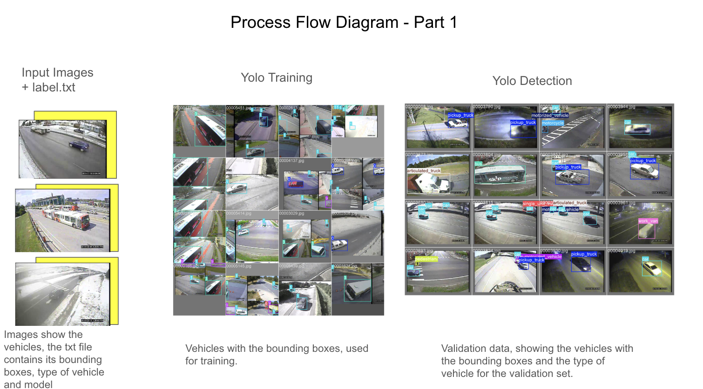
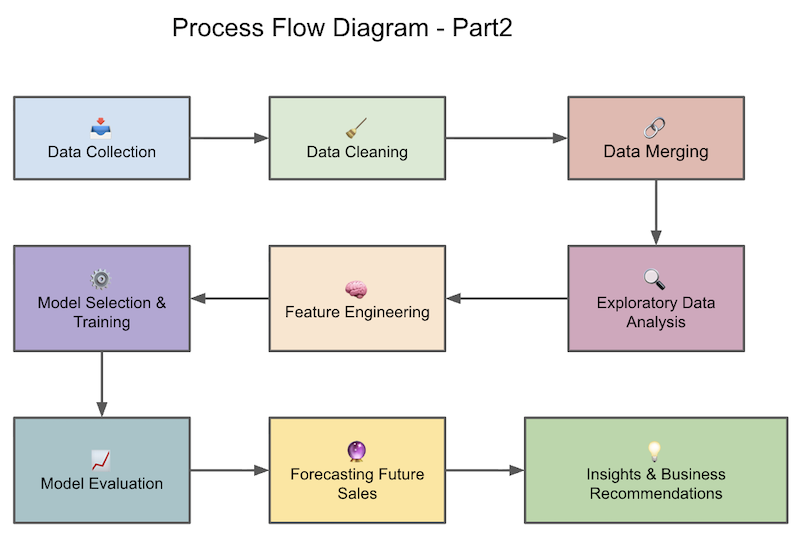

This project addresses two crucial components of modern transport: developing a real-time vehicle detection AI for Intelligent Transport Systems (ITS) and conducting a data-driven analysis of autopilot usage and its effect on road safety.
The goal was to create a deep learning model to perform Object Detection—specifically, predicting the type of vehicle (classification) and identifying its location with a bounding box (localization). This capability is foundational for vehicle tracking and incident response.
We employed the YOLO (You Only Look Once) framework. A training subset of 500 images was used to manage resources, ensuring all required object categories were represented.

| Metric | Result | Interpretation |
|---|---|---|
| mAP@0.5 | 0.413 | Good Localization. The model successfully places bounding boxes around vehicles. |
| mAP@0.5:0.95 | 0.302 | Poor Classification/Precision. The model struggles to accurately classify the vehicle type while maintaining high bounding box precision. |
The model achieved strong object localization but showed weaknesses in vehicle classification. This is primarily attributed to the limited 500-image training dataset. Future work will involve using a larger dataset to improve classification accuracy.
To analyze real-world data concerning autopilot usage to identify accident patterns and data reporting issues.

| Finding | Detail | Implication |
|---|---|---|
| Accident Peak | Most accidents occurred in the year 2022. | May indicate increased system usage or a reporting spike. |
| Geographic Hub | Most accidents occurred in CA, USA (California). | Consistent with California being a primary location for AV testing. |
| Data Limitation | The most frequent vehicle involved was Tesla Model -1 (Unknown). | Critical Finding: Highlights a major issue of missing vehicle model data, limiting specific safety analysis. |
The high prevalence of "Unknown" data for the vehicle model is the most significant finding. Effective safety analysis requires standardized and complete reporting mechanisms to accurately link incidents to specific vehicle models and autopilot systems.